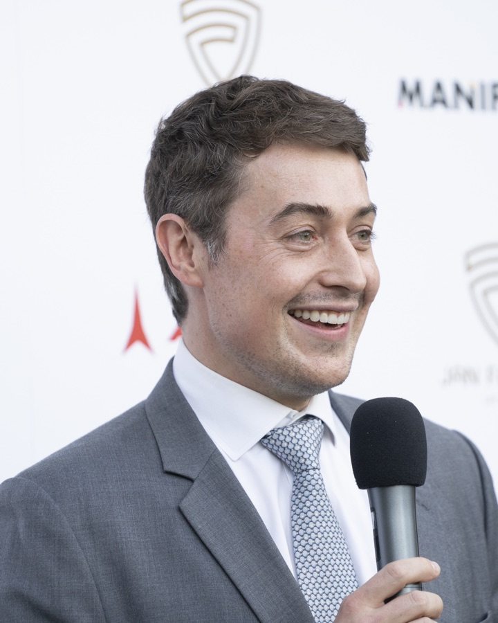
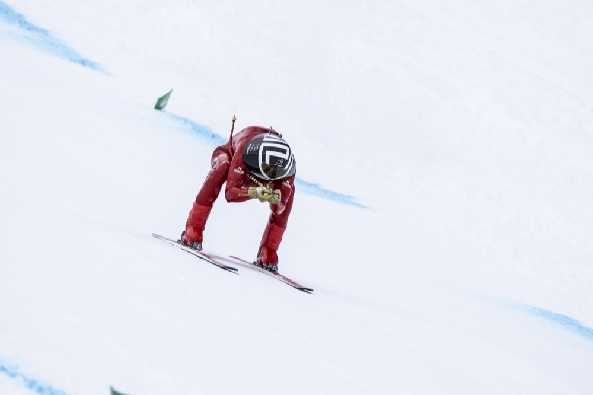
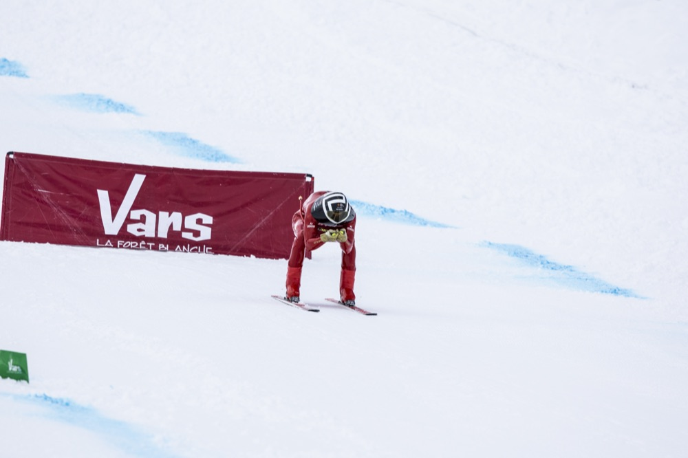
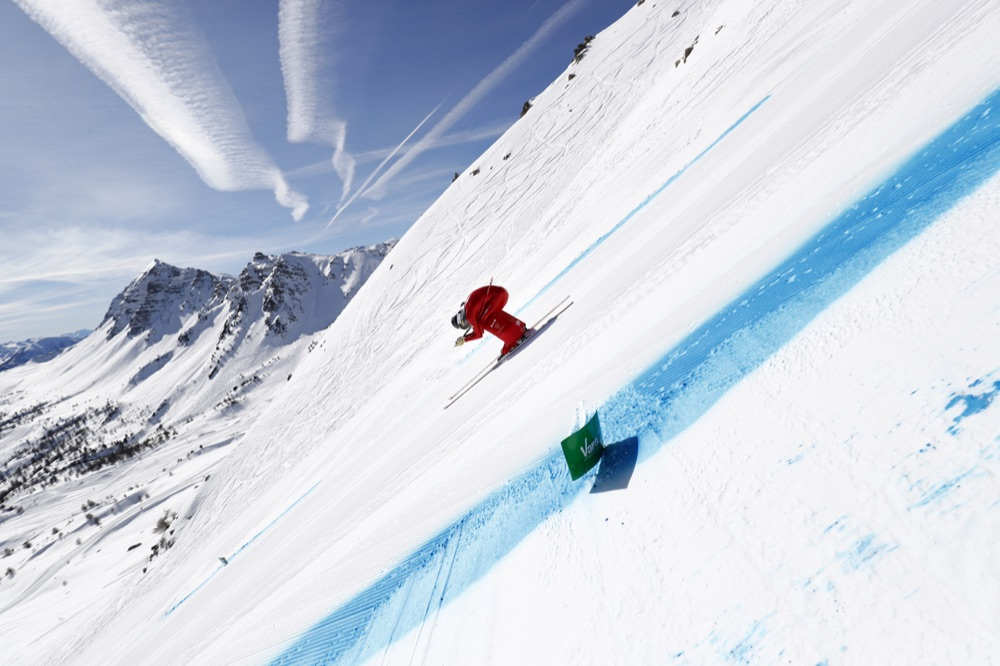
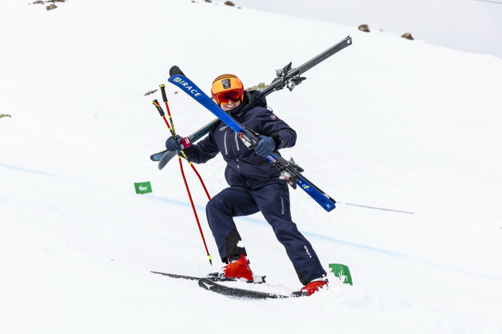
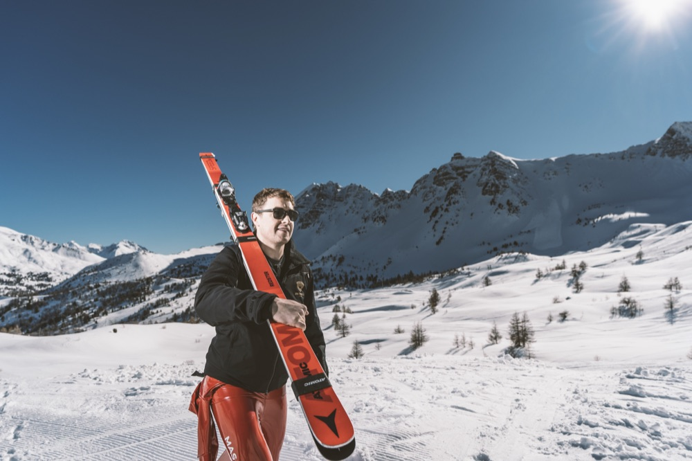
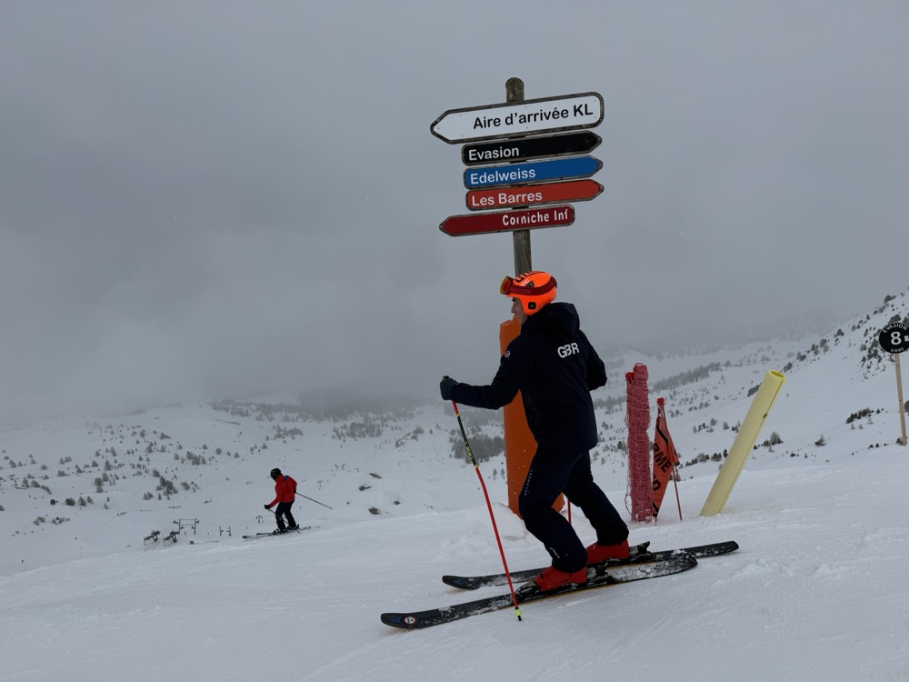

Press kit
For editors and producers: a short biography, facts checked against the record, and photographs in print resolution. All of it may be reproduced with credit. Questions to jf {at} janfarrell.com.
Biography
Jan Farrell is a British-Spanish investor and speed skier who lives between Madrid and London. He is chief executive of Brethil Investment and of Liberalia, the company he founded in 2002, aged 18, and an operating partner at Menako Capital. He chairs the Francis Bacon Debate Society, serves on the advisory board of AIXI Labs, and writes on frontier AI, most recently in the Financial Times. On skis he was FIS Speed Ski World Cup champion in 2014 and has been timed at 231.66 km/h, the fastest by a Briton since 2005.
Facts
- Born in Lancaster, England, on 23 September 1983, to a Czech mother and an English father. In Spain since the age of five.
- FIS Speed Ski World Cup champion, 2014, Speed 2 category.
- Personal best 231.66 km/h (Vars, 2015): the fastest by a Briton since 2005, and the third fastest Briton ever.
- World indoor speed skiing record, 104.956 km/h, set in 2015.
- Returned to the World Cup circuit in the 2024/25 season: 27th at the 2025 World Championships, Vars.
- Films on YouTube with 17 million views.
- The Francis Bacon Debate Society has sat at the House of Lords and Middle Temple. Details on the Debates page.
- Adjunct professor of entrepreneurship, IE Business School, Madrid.
Photographs
Click any photograph for the print-resolution file. More are available on request at jf {at} janfarrell.com.
{kind=link}

{kind=link}

{kind=link}

{kind=link}

{kind=link}

{kind=link}

{kind=link}

Selected coverage
- 2026 El Mundo, in print: the first speed ski descent in the Sierra de Guadarrama.
- 2022 CNN: “Lost Sports of the Winter Olympics”.
- 2018 Financial Times: “Speed skiing: too fast for the Olympics”.
- 2015 The New York Times, in print: on testing the Dainese D-air airbag.
- 2015 The Independent, in print: “Speed skiing starts at 120mph - anything less is just skiing”.
The complete archive is on the speed skiing page.